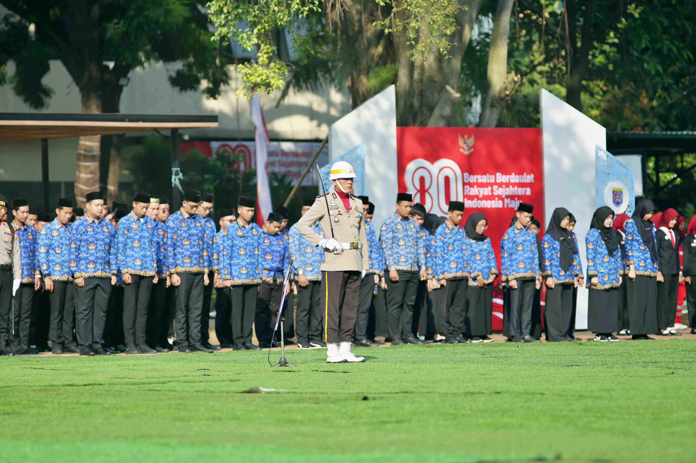

Research & Projects
I work at the intersection of digital governance, public policy, and human-computer interaction — studying how digital systems reshape public institutions and the people who use them.
Expertise
Projects

Selected Publications